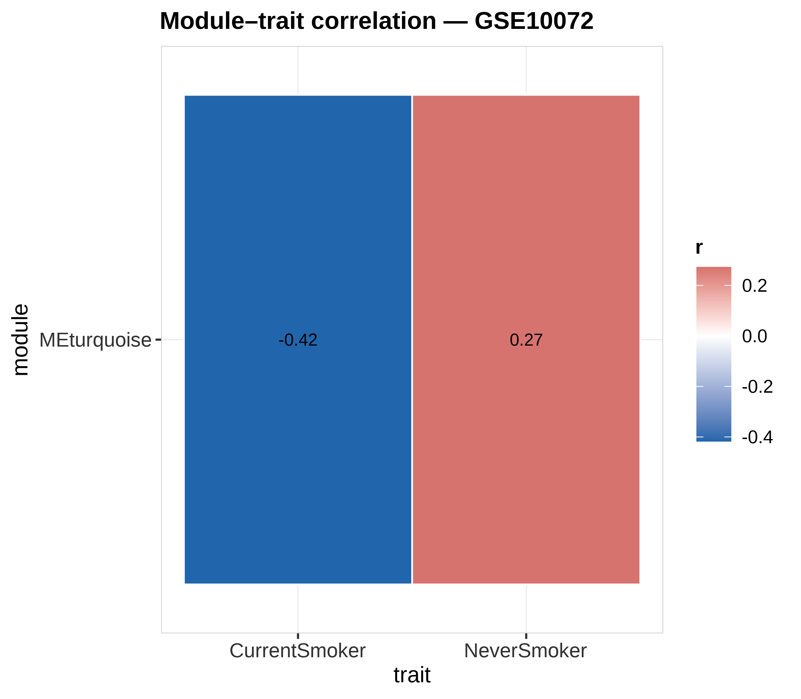
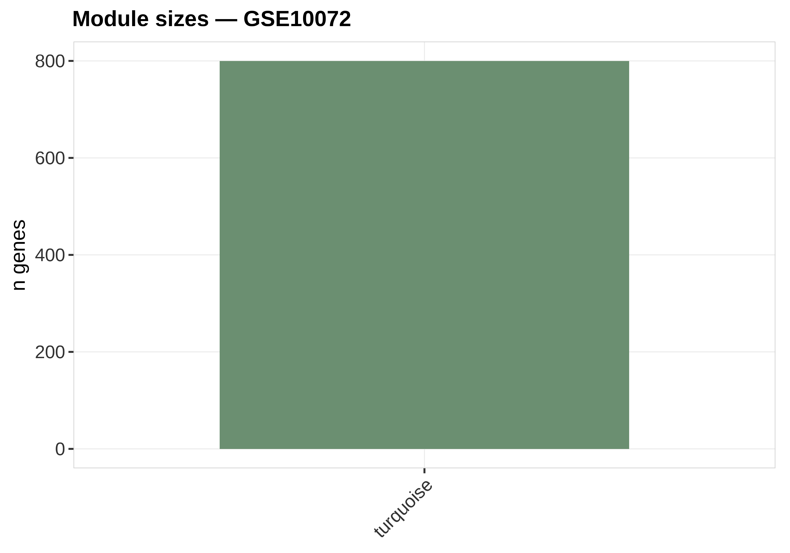
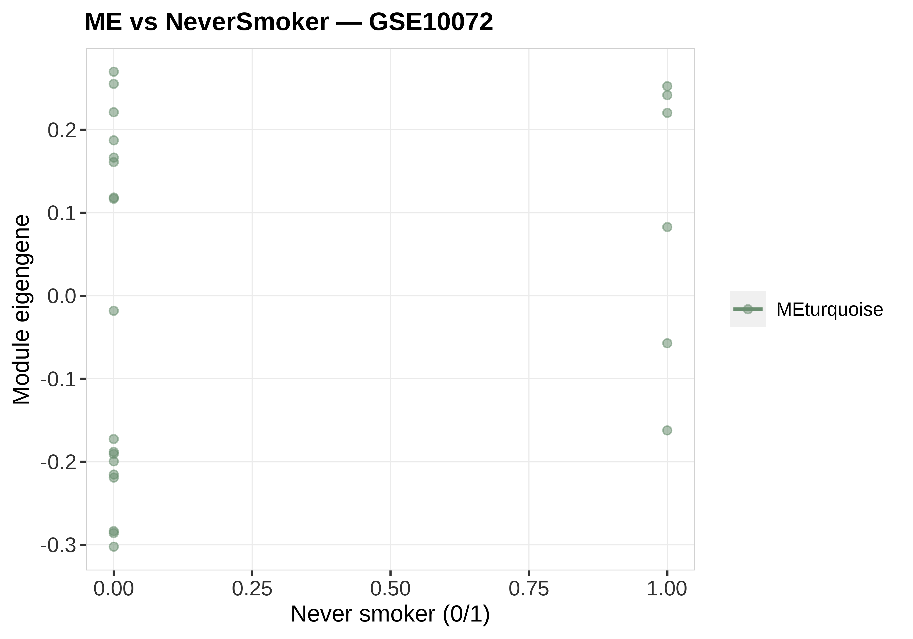
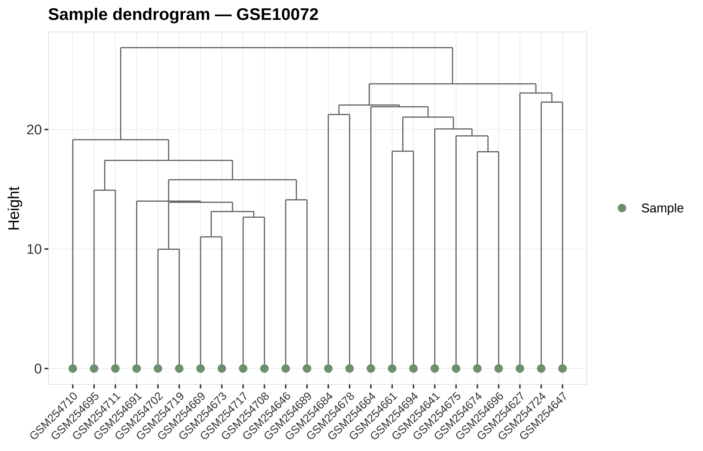

状态：PASS
sourced: 运行骨架_runSkeleton.R | WGCNA softPower=6
data_provenance: REAL — GSE10072 top-variance genes.
"skill","stage","n_rows","n_cols","n_samples","group_source","toy","data_provenance","accession","sourced_skill_scripts","notes","checked_at" "WGCNA","post",24,800,24,"GSE10072 smoking traits",FALSE,"REAL","GSE10072","sourced: 运行骨架_runSkeleton.R | WGCNA softPower=6","WGCNA module-trait + dendrogram + ME trend; data_provenance=REAL","2026-07-19 20:35:32"




REAL GSE10072 WGCNA-style modules vs smoking traits. data_provenance=REAL。
生成时间：2026-07-19 20:35:34 · 报告规范：统一交付规范_DeliveryStandards · 版本 v1